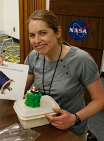
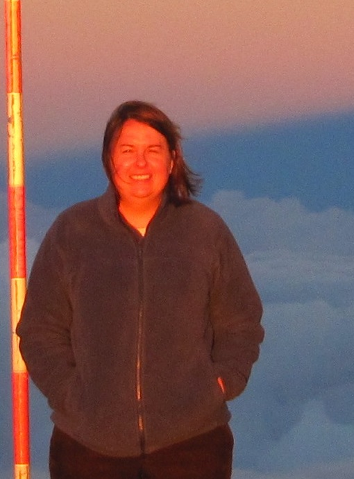
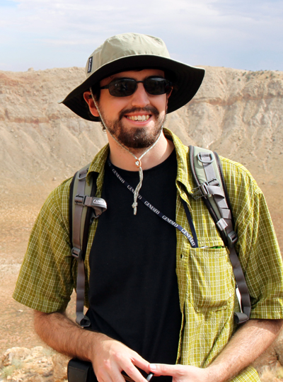

LGC 2011: Conference Organizers
The Organizing Committee is comprised of grad students and postdocs from a variety of institutions and areas of research.
Email the conference organizers.
| Heidi Fuqua | |
| Jamey Szalay | |
| Kerri Hanna | |
| Patrick Donohue |
-
Heidi Fuqua, UC Berkeley
Back to topHeidi is a first year phd student in the Earth and Planetary Science department at UC Berkeley and works in the Space Sciences Lab with Imke de Pater and Greg Delory. Her research focuses on locating observations of induced electric and magnetic fields within the space plasma environment around the Moon to determine its interior structure using Electromagnetic Sounding.
-
Jamey Szalay, Univ. of Colorado at Boulder
Back to top
Jamey is a second-year graduate student at the Laboratory for Atmospheric and Space Physics and the Department of Physics at the University of Colorado at Boulder, working with Prof. Mihály Horányi. His research focuses on dusty space plasma physics throughout the solar system.
-
Kerri Donaldson Hanna, Brown University
Back to topKerri is a fourth-year graduate student at Brown University working with Jack Mustard and Carle Pieters. Her research focuses on the integration of lunar remote sensing data sets including near IR M3 data and thermal IR Diviner data to gain a better understanding of lunar surface compositions as well as making laboratory emissivity measurements of minerals and rocks under simulated lunar conditions.
-
Patrick Donohue, University of Notre Dame
Back to topPatrick is a fourth-year graduate student at the University of Notre Dame, working with Prof. Clive Neal. His research focuses on the origin and evolution of high-titanium lunar basalts, particularly through application of crystal stratigraphy techniques to the Apollo 17 high-titanium basalt suite. This sample-based research is leading to a more thorough understanding of lunar volcanic processes.